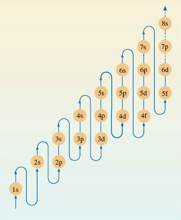

1.8.1 Electronic configurations of multi-electron atoms.
Electronic configurations can be assigned to nearly all atoms using the diagram shown in Figure 7.

Consider fluorine, this has an atomic number of 9, which means there are 9 electrons to fit into the subshells shown in Figure 7.
Bearing in mind the maximum number of electrons a sub-shell can hold (shown in Figure 6), the electrons in a fluorine atom will be arranged as follows:
Two electrons will be in the lowest energy 1s subshell.
Two electrons will be in the higher energy 2s subshell.
This leaves another five electrons which occupy the 2p subshell.
So using the notation introduced earlier, the electronic configuration for fluorine may be written:
1s2 2s2 2p5.
Now have a go at the following examples (remember you’ll need to refer back to Figure 7 ).
What are the electronic configurations of lithium (atomic number 3), silicon (atomic number 14) and potassium (atomic number 19)?
Answer
Lithium: 1s2 2s1
Silicon: 1s2 2s2 2p6 3s2 3p2
Potassium: 1s2 2s2 2p6 3s2 3p6 4s1
You probably noticed a quirk in the expected order of energy level filling which became apparent when you got to potassium. The 4s sub-shell is at lower energy than the 3d subshell. So this means the 4s shell fills with electrons before the 3d.
Try the following example which also highlights this point.
What is the electronic configuration of titanium (atomic number 22)?
Answer
1s2 2s2 2p6 3s2 3p6 4s2 3d2
For a bit more practice have a go at the following examples:
What are the electronic configurations of the following elements (these are the ones shown in Figure 1)?
(a) aluminium (atomic number 13), (b) sodium (atomic number 11), and copper (atomic number 29).
Answer
Al: 1s2 2s2 2p6 3s2 3p1
Na: 1s2 2s2 2p6 3s1
Cu: 1s2 2s2 2p6 3s2 3p6 4s2 3d9
OpenLearn - Discovering chemistry
 Except for third party materials and otherwise, this content is made available under a Creative Commons Attribution-NonCommercial-ShareAlike 4.0 Licence, full copyright detail can be found in the acknowledgements section. Please see full copyright statement for details.
Except for third party materials and otherwise, this content is made available under a Creative Commons Attribution-NonCommercial-ShareAlike 4.0 Licence, full copyright detail can be found in the acknowledgements section. Please see full copyright statement for details.